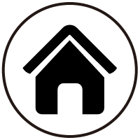

a、网站的主题是：星座的世界。
b、网站的主要特色：运用了动画和各种超链接使网页更加精美流畅。
c、网站的设计思路： 通过一个网页链接向十二个星座的介绍页面。
d、网站的整体组织结构：总-分-总。
e、站点文件夹内文件的情况，包括网页个数、图片个数、CSS文件个数：共有14+3
个网页，图片和css文件都有许多。
f、使用到哪些网页设计及相关的技术：动画的设置，超链接与抠图元素的应用。
g、设计过程中碰到的问题及解决方法：要想让图片变得精美我想素材是很重要的，
过程其实就是素材很难找，用了很长时间，好在我有耐心，没有轻易放弃。
